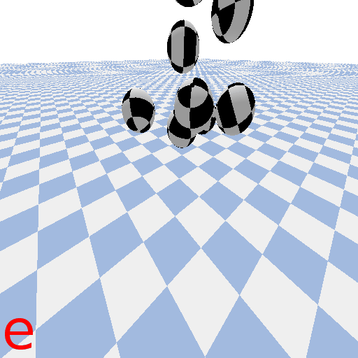

Step size is a consequential parameter

Ball drop simulation in PyBullet, with step size = a) 1/24000 s, b) 1/2400 s, c) 1/240 s (PyBullet default) and d) 1/24 s.

The usual failure mode associated with step size, and the on most likely to be checked when setting up a numerical simulation, is catastrophic failure from a step size too large.
Step size here is 1/2.4 seconds, 100 times larger than the PyBullet default.